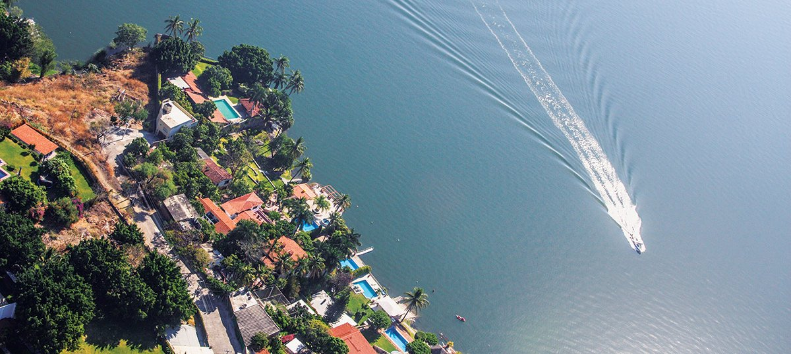

Tequesquitengo

Tequesquitengo es uno de los destinos turísticos más populares del estado de Morelos, famoso por su lago de aguas tranquilas y su ambiente ideal para deportes acuáticos, descanso y diversión. También se le conoce como “La playa de Morelos”.
Este lugar ofrece actividades como esquí acuático, paseo en lancha, paracaidismo y vuelo en globo. Además, cuenta con hoteles, balnearios, clubes náuticos y una gran variedad de restaurantes frente al lago.


Atractivos destacados:
- Lago de Tequesquitengo: Ideal para nadar, navegar, esquiar o relajarse en sus orillas.
- Paracaidismo: Uno de los lugares más conocidos en México para lanzarte en caída libre.
- Restaurantes con vista: Ofrecen gastronomía local y mariscos frescos junto al lago.
- Templo hundido: Se encuentra sumergido en el lago y puede verse cuando el nivel del agua baja.